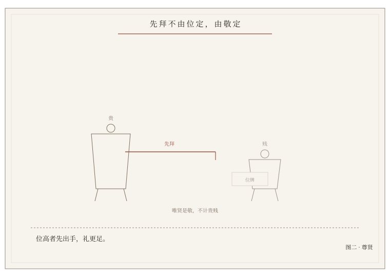

曲礼下 · 二·二十八 · 第 151 课
大夫、士相见，纵然贵贱悬殊，主人敬客，就先拜客；客敬主人，就先拜主人。注只二字：「尊贤。」
说什么事：大夫士相见，虽贵贱不敌，主人敬客则先拜客，客敬主人则先拜主人。
落在哪一层：礼，兼及礼意。论「先拜」不由位定，由敬定。
为何编在此位：上节辨君臣之不敢，此节辨宾主之可先。上下有定分，往还无定序。
【经】大夫士相見，雖貴賤不敵，主人敬客，則先拜客，客敬主人，則先拜主人。
【注】尊賢。
【疏】此谓使臣行礼受劳已竟，次见彼国卿大夫也。唯贤是敬，不计宾主贵贱。虽为大夫而德劣，亦先拜有德之士也。谓异国则尔，同国则否。又《士相见礼》若先生异爵者，谓士则先拜之，此则不必同国也。
不敌 不相匹敌。贵贱之位相差。
主人／客 此处主人是接待者，客是外来者。
敬 全节之枢。先拜只因有敬，不因有位。
尊贤 注二字。贤者可以居下位，敬不随位升降。
异国则尔，同国则否 疏语。此礼行于异国相见；同国自有定分。
大夫、士相见，虽然贵贱不相匹敌，主人若敬客，就先拜客；客若敬主人，就先拜主人。
礼把「谁先拜」这件小事，从位分里救了出来。贵贱不敌，然而敬可以先行。此节只有一问：你敬他什么？敬他的贤，则不以其位卑而居后。
第一层 先拜为敬之证 拜是礼中最费事的一步：俯身、下手、起身。谁先做这一步，谁就先付出。故先拜即先敬。
第二层 敬可逆位 疏说得极明白：「虽为大夫而德劣，亦先拜有德之士。」位高而德劣者，仍要先拜位低而有德者。这一句把「位」与「德」分开了。
第三层 异国同国之别 疏「异国则尔，同国则否」。同国有君臣长幼之定分，先拜不能随意；异国无定分，故以敬为准。礼的分寸，随境而变，不是一条通则到处套。
第四层 二字的注 注只有「尊贤」二字。郑玄注经，惯于繁；此处极简，是因为经文已足。注愈简，经愈重。
与今日何干 介绍两位陌生人相识，谁先伸手，看的是敬，不是名片。位高者先伸手，礼更足。
| 左 | 右 |
|---|---|
| 虽贵贱不敌 | 位有差，敬无差 |
| 主人敬客则先拜客 | 谁先付出，谁先敬 |
| 客敬主人则先拜主人 | 两向皆可，视敬所在 |
| 尊贤 | 注止二字，注愈简经愈重 |
| 德劣者亦先拜有德之士 | 位与德分开 |
| 异国则尔，同国则否 | 分寸随境 |
画两个一大一小的人形轮廓相对而立：大的居左，肩线高；小的居右，肩线低。两人之间画一只向前伸出的手（属于左侧那位），手与右侧人形之间画一道短实线；右侧人形身侧另画一枚小小的方牌（示意位牌），牌面空白且低于手的位置。下方一条横线。不写文字。赭色只用在两形之间那只手上。
